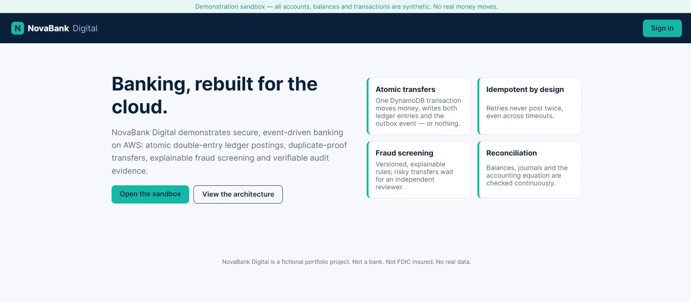
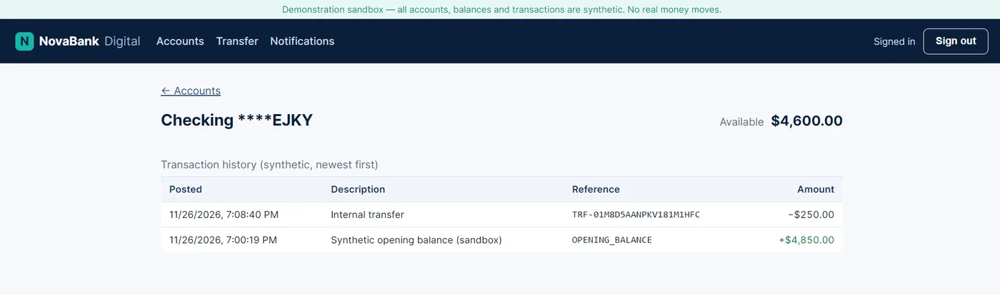
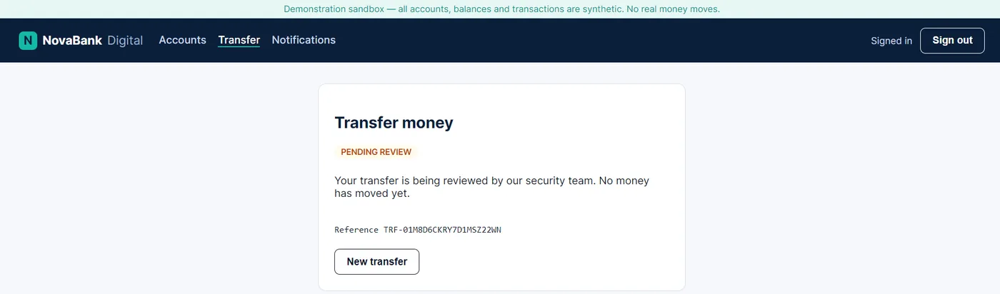
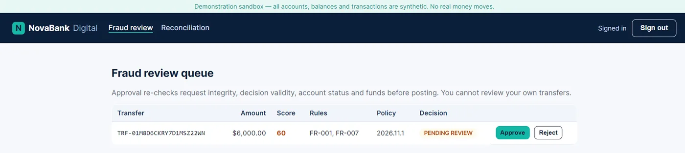
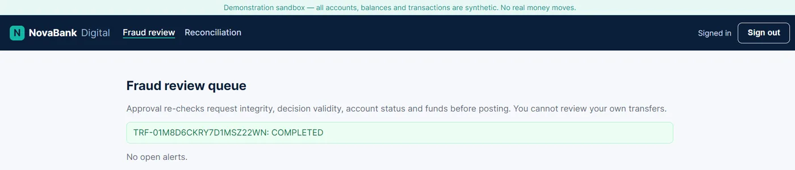
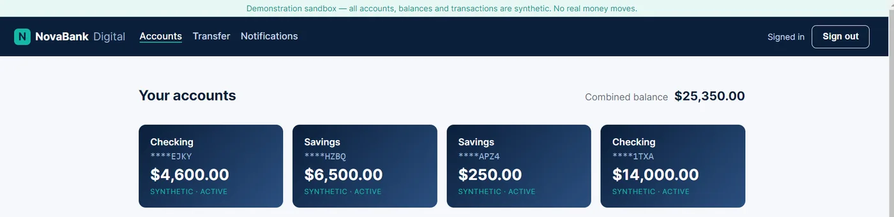
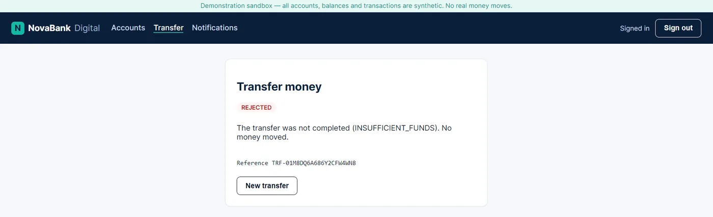
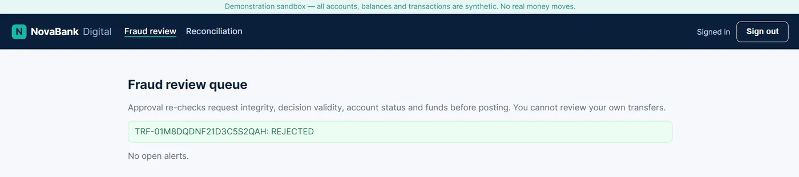
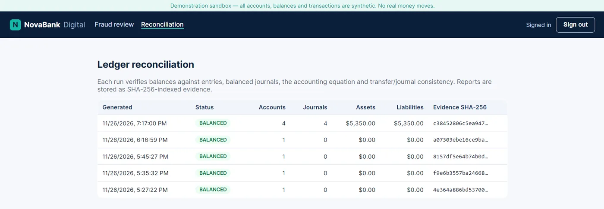

<title>NovaBank Digital Case Study</title>
<meta name="claude:viewport-fit-sides" content="cover">
<link rel="preconnect" href="https://fonts.googleapis.com">
<link rel="preconnect" href="https://fonts.gstatic.com" crossorigin>
<link rel="stylesheet" href="https://fonts.googleapis.com/css2?family=Space+Grotesk:wght@500;600;700&family=Inter:wght@400;500;600&family=JetBrains+Mono:wght@400;500&display=swap">
<style>
/* Layout: a single reading column (~70ch) with wide breakouts for the diagram, evidence register and screenshots. Ledger-style tables carry the subject. */
:root {
  --bg: #f5f7fa;
  --surface: #ffffff;
  --ink: #0e1b33;
  --muted: #55627a;
  --line: #dde3ec;
  --navy: #0b1f3a;
  --teal: #0f9e8e;
  --teal-soft: #e3f5f2;
  --ok: #157a4a;
  --ok-soft: #e4f4ea;
  --warn: #a5560b;
  --warn-soft: #fbefe1;
  --bad: #b42323;
  --bad-soft: #fbe6e6;
  --font-display: "Space Grotesk", "Segoe UI", system-ui, sans-serif;
  --font-body: "Inter", "Segoe UI", system-ui, sans-serif;
  --font-mono: "JetBrains Mono", ui-monospace, "SFMono-Regular", Menlo, monospace;
}
@media (prefers-color-scheme: dark) {
  :root:not([data-theme="light"]) {
    --bg: #0a1220; --surface: #111c2e; --ink: #e6ecf5; --muted: #9aa8bf; --line: #24324a;
    --navy: #07101e; --teal: #3cc7b5; --teal-soft: #0f2e2d;
    --ok: #5fd39a; --ok-soft: #10301f; --warn: #f0a85a; --warn-soft: #36240f; --bad: #f28b8b; --bad-soft: #3a1717;
    color-scheme: dark;
  }
}
:root[data-theme="dark"] {
  --bg: #0a1220; --surface: #111c2e; --ink: #e6ecf5; --muted: #9aa8bf; --line: #24324a;
  --navy: #07101e; --teal: #3cc7b5; --teal-soft: #0f2e2d;
  --ok: #5fd39a; --ok-soft: #10301f; --warn: #f0a85a; --warn-soft: #36240f; --bad: #f28b8b; --bad-soft: #3a1717;
  color-scheme: dark;
}
* { box-sizing: border-box; }
body { background: var(--bg); color: var(--ink); font: 16px/1.6 var(--font-body); }
a { color: var(--teal); text-underline-offset: 2px; }
a:focus-visible { outline: 2px solid var(--teal); outline-offset: 2px; border-radius: 2px; }
h1, h2, h3 { font-family: var(--font-display); text-wrap: balance; line-height: 1.2; margin: 0; }
h2 { font-size: 1.6rem; }
h3 { font-size: 1.1rem; }
p { margin: 0; }
code, .mono { font-family: var(--font-mono); font-size: .86em; }
.wrap { max-width: 1120px; margin: 0 auto; padding-left: max(16px, env(safe-area-inset-left, 0px)); padding-right: max(16px, env(safe-area-inset-right, 0px)); }
.read { max-width: 70ch; }
.stack { display: flex; flex-direction: column; gap: 1rem; }

.hero { background: var(--navy); color: #e8eef7; margin-top: calc(-1 * env(safe-area-inset-top, 0px)); padding-top: calc(env(safe-area-inset-top, 0px) + 3.5rem); padding-bottom: 3rem; }
.hero .wrap { display: grid; gap: 2rem; }
.eyebrow { font: 500 .75rem/1 var(--font-mono); letter-spacing: .12em; text-transform: uppercase; color: #7fe0d3; }
.hero h1 { font-size: clamp(2rem, 5vw, 3.2rem); color: #ffffff; max-width: 18ch; }
.hero p.lede { color: #c3cfdf; max-width: 62ch; font-size: 1.08rem; }
.banner { display: inline-block; font-size: .85rem; color: #0b1f3a; background: #bfeee7; padding: .3rem .7rem; border-radius: 4px; }
.facts { display: grid; grid-template-columns: repeat(auto-fit, minmax(150px, 1fr)); gap: 1px; background: #23385a; border: 1px solid #23385a; border-radius: 8px; overflow: hidden; }
.facts div { background: #0f2747; padding: 1rem; display: flex; flex-direction: column; gap: .2rem; }
.facts strong { font: 600 1.6rem/1.1 var(--font-display); color: #ffffff; font-variant-numeric: tabular-nums; }
.facts span { font-size: .82rem; color: #a9b8cc; }

main { padding-block: 3rem 4rem; }
section { padding-block: 2.5rem; border-top: 1px solid var(--line); }
section:first-child { border-top: 0; padding-top: 0; }
.section-head { display: flex; flex-direction: column; gap: .5rem; margin-bottom: 1.5rem; }
.muted { color: var(--muted); }
.small { font-size: .88rem; }

.diagram { background: var(--surface); border: 1px solid var(--line); border-radius: 8px; padding: 1rem; overflow-x: auto; }
.diagram pre.mermaid { margin: 0; min-width: 640px; background: transparent; }

.grid2 { display: grid; grid-template-columns: repeat(auto-fit, minmax(300px, 1fr)); gap: 1.25rem; }
.panel { background: var(--surface); border: 1px solid var(--line); border-radius: 8px; padding: 1.25rem; display: flex; flex-direction: column; gap: .6rem; min-width: 0; }
.panel ul { margin: 0; padding-left: 1.1rem; display: flex; flex-direction: column; gap: .35rem; }

.scroll { overflow-x: auto; }
table { width: 100%; border-collapse: collapse; font-size: .92rem; }
th, td { text-align: left; padding: .55rem .7rem; border-bottom: 1px solid var(--line); vertical-align: top; }
th { font: 600 .74rem/1.3 var(--font-body); letter-spacing: .06em; text-transform: uppercase; color: var(--muted); }
td.num, th.num { text-align: right; font-variant-numeric: tabular-nums; white-space: nowrap; }

.journal { background: var(--surface); border: 1px solid var(--line); border-radius: 8px; overflow: hidden; }
.journal header { display: flex; flex-wrap: wrap; gap: .4rem 1.2rem; justify-content: space-between; padding: .8rem 1rem; background: var(--teal-soft); font-size: .86rem; }
.journal td { font-family: var(--font-mono); font-size: .85rem; }
.journal tfoot td { font-weight: 600; border-bottom: 0; }

.pill { display: inline-block; font: 600 .72rem/1 var(--font-body); letter-spacing: .04em; padding: .3rem .5rem; border-radius: 999px; white-space: nowrap; }
.pill.ok { background: var(--ok-soft); color: var(--ok); }
.pill.warn { background: var(--warn-soft); color: var(--warn); }
.pill.bad { background: var(--bad-soft); color: var(--bad); }
.pill.part { background: var(--teal-soft); color: var(--teal); }

.shots { display: grid; grid-template-columns: repeat(auto-fit, minmax(320px, 1fr)); gap: 1.5rem; }
figure { margin: 0; display: flex; flex-direction: column; gap: .5rem; min-width: 0; }
figure img { width: 100%; height: auto; border: 1px solid var(--line); border-radius: 6px; display: block; background: #f5f7fa; }
figcaption { font-size: .88rem; color: var(--muted); }
figcaption strong { color: var(--ink); font-weight: 600; }

.fixes { display: grid; gap: .9rem; }
.fix { display: grid; grid-template-columns: minmax(0, 1fr) minmax(0, 1.4fr); gap: .3rem 1.5rem; padding: 1rem 0; border-bottom: 1px solid var(--line); }
.fix:last-child { border-bottom: 0; }
.fix h3 { font-size: 1rem; }
@media (max-width: 640px) { .fix { grid-template-columns: 1fr; } }

footer { padding-block: 2rem 3rem; border-top: 1px solid var(--line); color: var(--muted); font-size: .86rem; }
</style>

<header class="hero">
  <div class="wrap">
    <div class="stack">
      <span class="eyebrow">Portfolio · Project 4 · AWS us-east-2</span>
      <h1>NovaBank Digital</h1>
      <p class="lede">A serverless banking platform on AWS where every transfer is an atomic double-entry posting. Seven microservices, a reviewed fraud hold, a transactional outbox and audit evidence. All of it was built with Terraform and GitHub Actions and tested live in a real AWS account.</p>
      <span class="banner">Synthetic sandbox. No real money, customers or payment networks.</span>
    </div>
    <div class="facts" role="list">
      <div role="listitem"><strong>7 + 3</strong><span>microservices + background workers on Lambda</span></div>
      <div role="listitem"><strong>182</strong><span>AWS resources in dev, all from Terraform</span></div>
      <div role="listitem"><strong>208</strong><span>automated tests (177 Python, 31 frontend)</span></div>
      <div role="listitem"><strong>13 / 30</strong><span>validation scenarios proven on the live system</span></div>
      <div role="listitem"><strong>2 min 20 s</strong><span>measured point-in-time table restore</span></div>
      <div role="listitem"><strong>$5.50–9.50</strong><span>estimated monthly cost at demo load, no idle servers</span></div>
    </div>
  </div>
</header>

<main class="wrap">

<section>
  <div class="section-head read">
    <span class="eyebrow" style="color: var(--teal)">The problem</span>
    <h2>Money must never be half-moved</h2>
    <p class="muted">A transfer touches two balances, a journal, an idempotency record, a status change and an event. In a distributed system any of those can fail or be retried. The platform is built so each transfer is either posted exactly once in full or not at all, and so you can prove it afterwards.</p>
  </div>
</section>

<section id="architecture">
  <div class="section-head read">
    <span class="eyebrow" style="color: var(--teal)">Architecture</span>
    <h2>Serverless services around a single ledger writer</h2>
    <p class="muted">The browser signs in with Cognito (authorization code + PKCE). API Gateway checks the JWT and route scopes, and each service checks again. Only the ledger service can change balances. Events leave through an outbox on DynamoDB Streams, so a database write and its event can never disagree.</p>
  </div>
  <div class="diagram">
<pre class="mermaid">
flowchart LR
  U[Browser SPA] --> CF[CloudFront + OAC] --> S3[(Private S3 site)]
  U --> COG[Cognito user pool<br/>PKCE, groups, scopes]
  U --> API[API Gateway HTTP API<br/>JWT authorizer]
  API --> CUS[customer]
  API --> ACC[account]
  API --> TRF[transfer]
  API --> FRD[fraud]
  API --> AUD[audit]
  API --> NOT[notification]
  TRF -- screen --> FRD
  TRF -- post --> LED[ledger<br/>only balance writer]
  ACC -- opening journal --> LED
  LED --> DDB[(DynamoDB<br/>TransactWriteItems)]
  DDB -- outbox stream --> PUB[outbox publisher] --> EB{{EventBridge}}
  EB --> Q1[[SQS + DLQ]] --> NOT
  EB --> Q2[[SQS + DLQ]] --> AUD
  REC[ledger reconciliation<br/>hourly] --> DDB
  REC --> EV[(S3 evidence<br/>versioned, SHA-256)]
</pre>
  </div>
</section>

<section id="ledger">
  <div class="section-head read">
    <span class="eyebrow" style="color: var(--teal)">Transaction integrity</span>
    <h2>One transfer, one atomic write</h2>
    <p class="muted">Amounts are integer cents end to end. A float in a request is rejected. Each posting is a single DynamoDB transaction of conditional writes. If any condition fails, nothing is written.</p>
  </div>
  <div class="grid2">
    <div class="journal">
      <header><span class="mono">Journal for TRF-01M8D6CKRY7D1MSZ22WN</span><span class="pill ok">COMPLETED after review</span></header>
      <div class="scroll">
        <table>
          <thead><tr><th>Account</th><th>Normal side</th><th class="num">Debit</th><th class="num">Credit</th></tr></thead>
          <tbody>
            <tr><td>Checking ****1TXA</td><td>liability</td><td class="num">6,000.00</td><td class="num"></td></tr>
            <tr><td>Savings ****HZBQ</td><td>liability</td><td class="num"></td><td class="num">6,000.00</td></tr>
          </tbody>
          <tfoot><tr><td colspan="2">Balanced</td><td class="num">6,000.00</td><td class="num">6,000.00</td></tr></tfoot>
        </table>
      </div>
    </div>
    <div class="panel">
      <h3>What the transaction enforces</h3>
      <ul class="small">
        <li>Source account ACTIVE, same currency, enough funds and owned by the caller. The check is a condition on the write itself.</li>
        <li>Immutable entry rows and a journal header that can only be created once.</li>
        <li>A permanent posting record keyed by journal ID, so a retry cannot post twice.</li>
        <li>A transfer state guard: only APPROVED_FOR_POSTING can become COMPLETED.</li>
        <li>An outbox event in the same transaction, published later via Streams.</li>
        <li>Customer deposits are liabilities; synthetic funding (GL-1000) is the matching asset, so assets always equal liabilities.</li>
      </ul>
    </div>
  </div>
</section>

<section id="security">
  <div class="section-head read">
    <span class="eyebrow" style="color: var(--teal)">Security and delivery</span>
    <h2>Least privilege from the browser to the pipeline</h2>
  </div>
  <div class="grid2">
    <div class="panel">
      <h3>Application</h3>
      <ul class="small">
        <li>Identity comes only from verified JWT claims (issuer and client checked); request bodies can't name a customer.</li>
        <li>Foreign objects return 404, and pagination cursors are bound to the caller.</li>
        <li>Fraud reviewers can't review their own transfers, and approval re-checks funds and account status.</li>
        <li>Tokens are held in memory only and renewed silently; logs redact identifiers.</li>
        <li>Each Lambda has its own IAM role, with DynamoDB access limited to its own key prefixes.</li>
      </ul>
    </div>
    <div class="panel">
      <h3>Pipeline</h3>
      <ul class="small">
        <li>GitHub OIDC with separate plan, apply, deploy and cleanup roles; no stored AWS keys.</li>
        <li>Protected environments; apply runs the exact plan file, checked by SHA-256 and commit.</li>
        <li>Reproducible Lambda zips with an SBOM and build attestations, verified before deploy.</li>
        <li>Deploys move a <code>live</code> alias, watch errors per new version, and roll back automatically.</li>
        <li>Actions pinned by SHA; scanned with Checkov, TFLint, Bandit, pip-audit, gitleaks, zizmor and CodeQL.</li>
      </ul>
    </div>
  </div>
</section>

<section id="evidence">
  <div class="section-head read">
    <span class="eyebrow" style="color: var(--teal)">Live evidence</span>
    <h2>What was proven on the running system</h2>
    <p class="muted">All 30 scenarios have automated tests in CI. The rows below were also run against the deployed dev environment on 26–27 November 2026, in a browser, in CloudShell or from GitHub Actions.</p>
  </div>
  <div class="scroll">
    <table>
      <thead><tr><th>ID</th><th>Scenario</th><th>Live result</th><th>Status</th></tr></thead>
      <tbody>
        <tr><td class="mono">T03</td><td>Requests without a valid token are refused</td><td>8 of 8 requests to protected routes returned 401, including a forged <code>alg: none</code> token</td><td><span class="pill ok">Passed</span></td></tr>
        <tr><td class="mono">T05–T07</td><td>Open accounts, transfer, view history</td><td>Opening journals posted; $250 transfer COMPLETED with matching −/+ entries</td><td><span class="pill ok">Passed</span></td></tr>
        <tr><td class="mono">T08</td><td>Insufficient funds</td><td>$300 from a $250 account was REJECTED; no entry written</td><td><span class="pill ok">Passed</span></td></tr>
        <tr><td class="mono">T11</td><td>Duplicate submission posts once</td><td>A double-click on Confirm produced one transfer and one history line</td><td><span class="pill ok">Passed (browser)</span></td></tr>
        <tr><td class="mono">T15</td><td>Ledger reconciles</td><td>On-demand and hourly runs BALANCED, each with a SHA-256 evidence file</td><td><span class="pill ok">Passed</span></td></tr>
        <tr><td class="mono">T16</td><td>High-risk transfer held</td><td>$6,000 and $5,500 held at score 60 (FR-001, FR-007); no money moved; the $5,500 was then rejected by a reviewer</td><td><span class="pill ok">Passed</span></td></tr>
        <tr><td class="mono">T18</td><td>Reviewer approval re-checked, then posted</td><td>Approved → COMPLETED; $20,000 → $14,000 and $500 → $6,500; total unchanged at $25,350</td><td><span class="pill ok">Passed</span></td></tr>
        <tr><td class="mono">T27</td><td>Failed release rolled back</td><td>The first deploy was judged unhealthy and all 10 aliases rolled back automatically</td><td><span class="pill ok">Passed</span></td></tr>
        <tr><td class="mono">T28</td><td>Drift detected</td><td>Two runs found no drift; detecting a deliberate change not yet exercised</td><td><span class="pill part">Baseline</span></td></tr>
        <tr><td class="mono">T29</td><td>Restore and reconcile</td><td>Tables restored to 05:10:00 UTC in 2 min 20 s; BALANCED; state matched that exact second</td><td><span class="pill ok">Passed</span></td></tr>
        <tr><td class="mono">T30</td><td>Clean teardown</td><td>2026-11-28: all 182 dev resources destroyed by the approved cleanup workflow; nothing left</td><td><span class="pill ok">Passed</span></td></tr>
      </tbody>
    </table>
  </div>
  <p class="small muted" style="margin-top: .8rem">Also live: T01 and T02 (infrastructure and pipeline). The full register with run IDs is in <code>docs/validation-scenarios.md</code> and <code>docs/portfolio-evidence.md</code>.</p>
</section>

<section id="screens">
  <div class="section-head read">
    <span class="eyebrow" style="color: var(--teal)">Screens</span>
    <h2>The live sandbox</h2>
    <p class="muted">Screenshots from the deployed CloudFront site, signed in through Cognito as a synthetic customer and as a fraud reviewer.</p>
  </div>
  <div class="shots">
    <figure><figcaption><strong>Landing page.</strong> Every screen carries the synthetic-data banner.</figcaption></figure>
    <figure><figcaption><strong>Account history.</strong> The $250 transfer appears as one debit here and one credit on savings.</figcaption></figure>
    <figure><figcaption><strong>Fraud hold.</strong> The $6,000 transfer was held before posting.</figcaption></figure>
    <figure><figcaption><strong>Reviewer queue.</strong> Score, the rules that fired and the policy version are shown.</figcaption></figure>
    <figure><figcaption><strong>Approval.</strong> Funds re-checked, posted atomically, alert closed.</figcaption></figure>
    <figure><figcaption><strong>After approval.</strong> Money moved between accounts; the combined balance is unchanged.</figcaption></figure>
    <figure><figcaption><strong>Insufficient funds.</strong> Rejected with a traceable reference; nothing posted.</figcaption></figure>
    <figure><figcaption><strong>Reviewer rejection.</strong> The $5,500 hold was rejected; balances unchanged.</figcaption></figure>
    <figure><figcaption><strong>Reconciliation.</strong> Hourly reports with SHA-256 hashes of the stored evidence.</figcaption></figure>
  </div>
</section>

<section id="lessons">
  <div class="section-head read">
    <span class="eyebrow" style="color: var(--teal)">Engineering log</span>
    <h2>Problems the live rollout found, and the fixes</h2>
    <p class="muted">Each of these passed offline testing and only showed up against real AWS. Every fix came with a regression test or a documented exception.</p>
  </div>
  <div class="fixes">
    <div class="fix"><h3>GitHub OIDC was refused</h3><p class="small muted">CloudTrail showed GitHub sending a subject claim that uses immutable owner and repository IDs. The IAM trust policies were rewritten to match that format.</p></div>
    <div class="fix"><h3>Plan role could write state</h3><p class="small muted">Found in plan review before the first apply. The plan role is now read-only, except for writing its own lock file.</p></div>
    <div class="fix"><h3>Alarms could not notify</h3><p class="small muted">CloudWatch can't publish to an SNS topic encrypted with the AWS-managed key, so the alarm topic was changed and the exception catalogued.</p></div>
    <div class="fix"><h3>First apply was partial</h3><p class="small muted">The placeholder Lambda zip was generated at plan time and was missing on the apply runner. It is now committed, and a test forbids plan-time generated files.</p></div>
    <div class="fix"><h3>Rollback on a false alarm</h3><p class="small muted">The first deploy rolled back on errors from placeholder code still being invoked on a schedule. The health check now measures errors per new version.</p></div>
    <div class="fix"><h3>Sessions expired after 15 minutes</h3><p class="small muted">Added silent refresh-token renewal and a clear sign-in-again path; reviewers now land on their own queue.</p></div>
  </div>
</section>

<section id="limits">
  <div class="section-head read">
    <span class="eyebrow" style="color: var(--teal)">Scope</span>
    <h2>What this is not</h2>
  </div>
  <div class="read stack small muted">
    <p>A portfolio sandbox. It holds no real funds or personal data and makes no claim of PCI DSS, SOC 2 or banking-regulator compliance. Controls are mapped to frameworks for learning only.</p>
    <p>It runs in a single region. Point-in-time restore was measured, but switching the live services onto restored tables was not exercised. Latency targets are still to be measured, and cost is an estimate rather than a bill.</p>
  </div>
</section>

</main>

<footer>
  <div class="wrap">NovaBank Digital is a fictional project. Built with Python 3.13, React and TypeScript, Terraform and GitHub Actions on AWS Lambda, DynamoDB, API Gateway, Cognito, EventBridge, SQS, S3 and CloudFront.</div>
</footer>
